Antes de nada Before we start
Este post es distinto a los demás. No es un proyecto casero, es la memoria de un proyecto del módulo de Redes de Área Local, de mi primer curso de ASIR: diseñar e implementar desde cero una red universitaria completa en Cisco Packet Tracer. Me apetecía dejarlo aquí entero, tal cual lo entregué, porque es de los proyectos donde más se me juntó lo académico con lo que luego uso en la práctica. Aviso: este post es más largo de lo normal, porque quiero dejarlo completo, con sus tablas, sus capturas y su memoria tal cual.
This post is different from the others. It's not a home project, it's the report for my Local Area Networks module, from my first year of ASIR: designing and implementing a full university network from scratch in Cisco Packet Tracer. I wanted to leave it here in full, exactly as I submitted it, because it's one of the projects where the academic side and what I actually use later came together the most. Heads up: this post is longer than usual, because I want to leave it complete, with its tables, its screenshots, and its report as it was.
1. Introducción 1. Introduction
El proyecto consiste en el diseño e implementación de una red universitaria denominada "Campus ASIR", desarrollada mediante la herramienta de simulación Cisco Packet Tracer.
La red está compuesta por tres edificios interconectados: Facultad 1, Facultad 2 y el Centro de Control. Cada edificio dispone de su propia infraestructura de red, formada por un router, un switch y los equipos finales distribuidos en sus respectivas plantas.
Para el direccionamiento de la red se ha utilizado la técnica VLSM, que permite una asignación eficiente de direcciones IP adaptada a las necesidades reales de cada subred. La comunicación entre edificios se garantiza mediante enrutamiento estático configurado en cada router.
Además, se ha implementado un servidor DHCP centralizado en el Centro de Control para la
asignación automática de direcciones IP, así como un servidor DNS y Web accesible desde
cualquier punto de la red mediante el dominio www.informaticos.alajara.uni.
The project consists of designing and implementing a university network called "Campus
ASIR", built using the Cisco Packet Tracer simulation tool. The network is made up of three
interconnected buildings: Facultad 1, Facultad 2, and the Centro de Control. Each building has
its own network infrastructure, made up of a router, a switch, and the end devices distributed
across its floors. Addressing was done using the VLSM technique, which allows efficient IP
allocation adapted to each subnet's real needs. Communication between buildings is guaranteed
through static routing configured on each router. A centralized DHCP server was also
implemented in the Centro de Control for automatic IP assignment, along with a DNS and Web
server accessible from anywhere on the network through the domain
www.informaticos.alajara.uni.
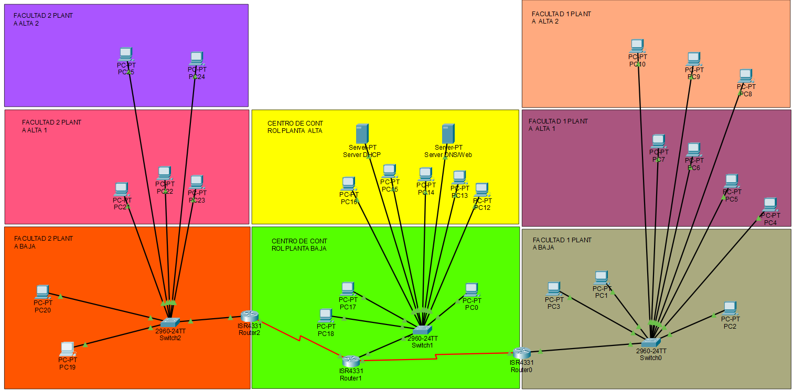
2. Diseño físico de la red 2. Physical network design
La red universitaria Campus ASIR está compuesta por tres edificios, cada uno con sus propias plantas y equipos de red. Todos los edificios han sido diseñados siguiendo el mismo criterio: un armario rack centralizado en la planta baja que concentra todo el cableado del edificio, con un router y un switch que dan servicio a todas las plantas.
The Campus ASIR university network is made up of three buildings, each with its own floors and network equipment. All the buildings were designed following the same criteria: a centralized rack cabinet on the ground floor concentrating all the building's cabling, with a router and a switch serving all floors.
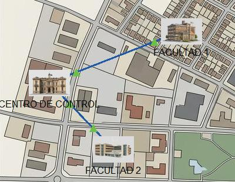
2.1. Edificio Facultad 1
El edificio de Facultad 1 cuenta con tres plantas distribuidas de la siguiente manera:
- Planta Baja: armario rack con Router0 y Switch0, además de 3 equipos (PC1, PC2, PC3).
- Planta Alta 1: 4 equipos (PC4, PC5, PC6, PC7).
- Planta Alta 2: 3 equipos (PC8, PC9, PC10).
The Facultad 1 building has three floors distributed as follows: Ground floor: rack cabinet with Router0 and Switch0, plus 3 devices (PC1, PC2, PC3). Floor 1: 4 devices (PC4, PC5, PC6, PC7). Floor 2: 3 devices (PC8, PC9, PC10).
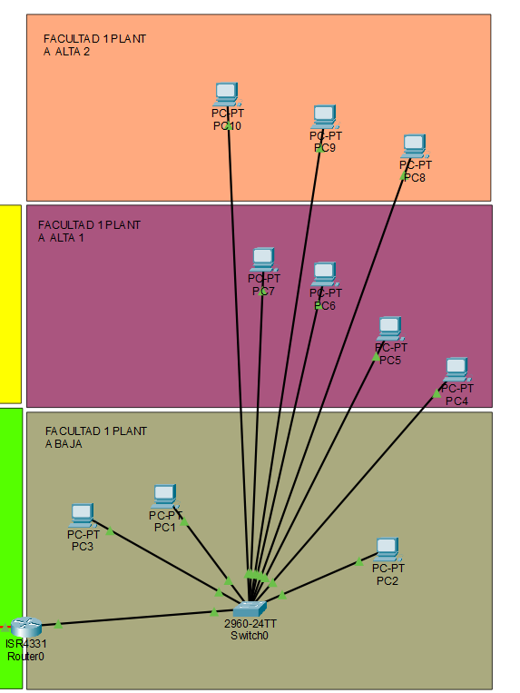
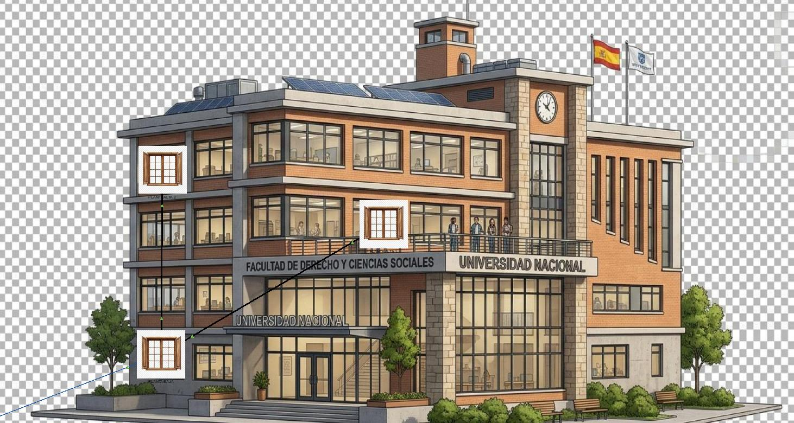
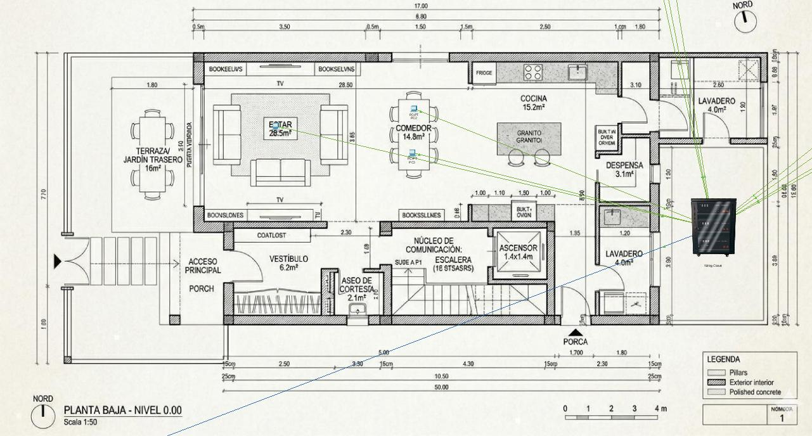
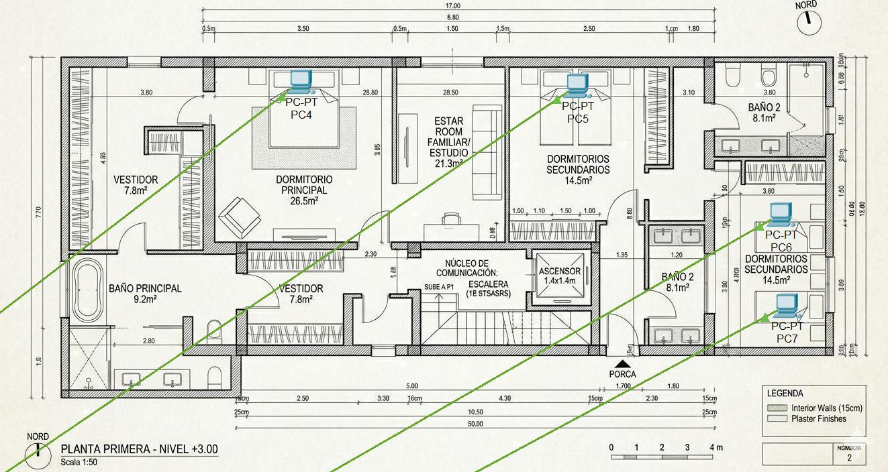
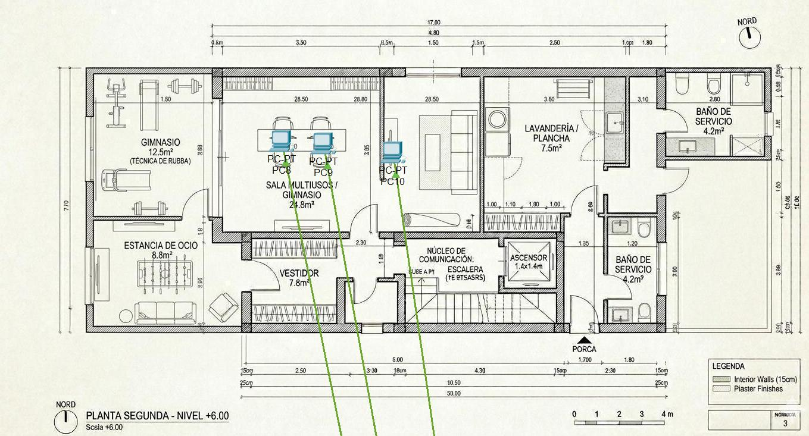
2.2. Edificio Facultad 2
El edificio de Facultad 2 cuenta con tres plantas distribuidas de la siguiente manera:
- Planta Baja: armario rack con Router2 y Switch2, además de 2 equipos (PC19, PC20).
- Planta Alta 1: 3 equipos (PC21, PC22, PC23).
- Planta Alta 2: 2 equipos (PC24, PC25).
The Facultad 2 building has three floors distributed as follows: Ground floor: rack cabinet with Router2 and Switch2, plus 2 devices (PC19, PC20). Floor 1: 3 devices (PC21, PC22, PC23). Floor 2: 2 devices (PC24, PC25).
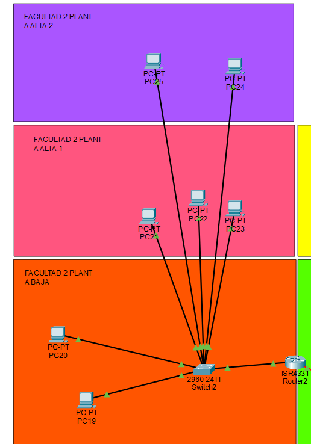
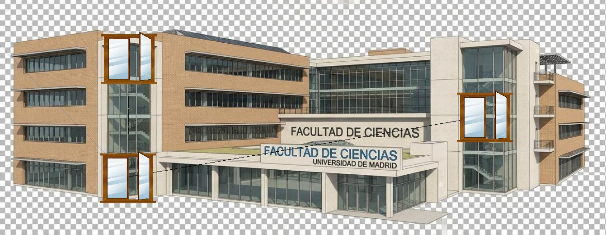
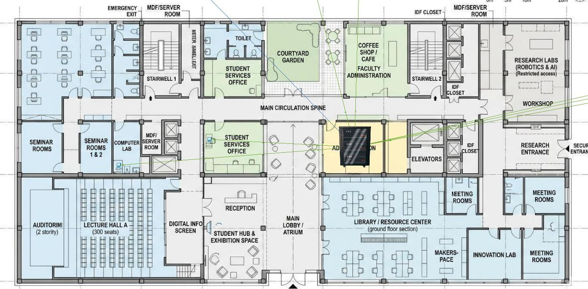
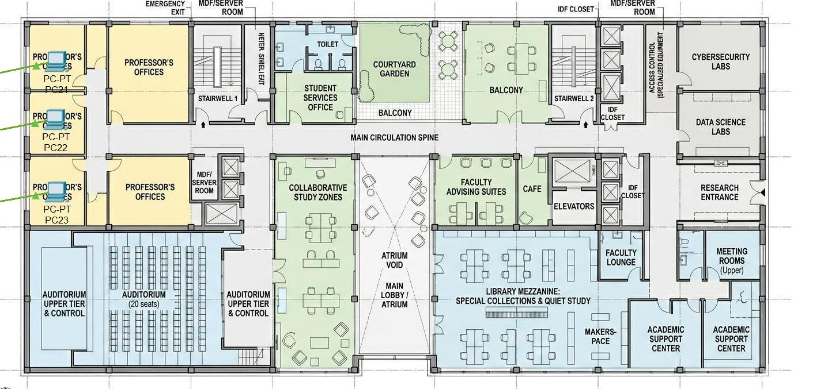
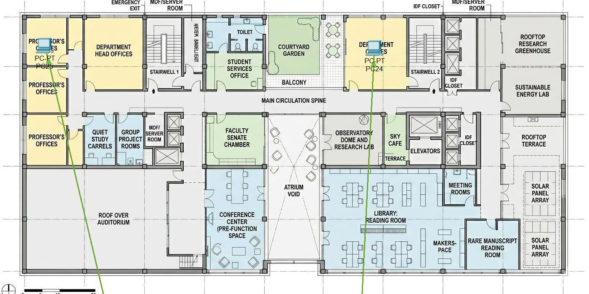
2.3. Centro de Control
El Centro de Control es el edificio principal de la red universitaria y cuenta con dos plantas:
- Planta Baja: armario rack con Router1 y Switch1, además de 3 equipos (PC0, PC17, PC18) y el servidor DHCP y DNS/Web.
- Planta Alta: 5 equipos (PC12, PC13, PC14, PC15, PC16).
The Centro de Control is the main building of the university network and has two floors: Ground floor: rack cabinet with Router1 and Switch1, plus 3 devices (PC0, PC17, PC18) and the DHCP and DNS/Web server. Upper floor: 5 devices (PC12, PC13, PC14, PC15, PC16).
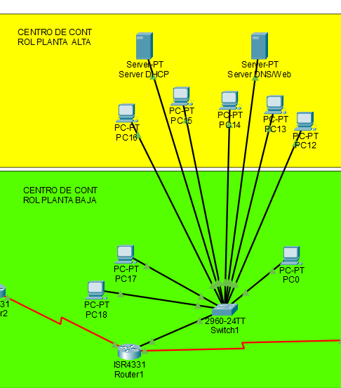
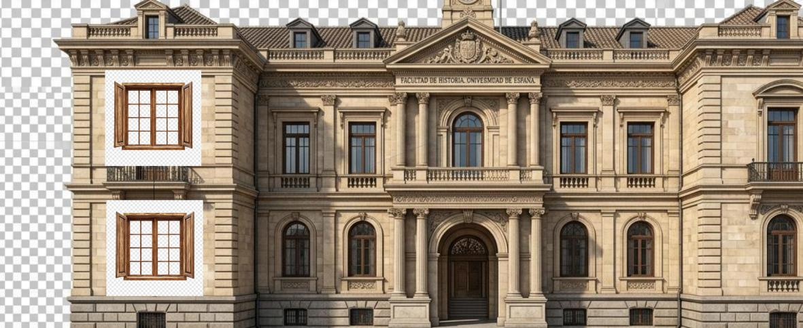
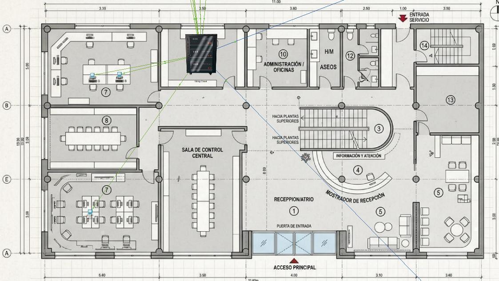
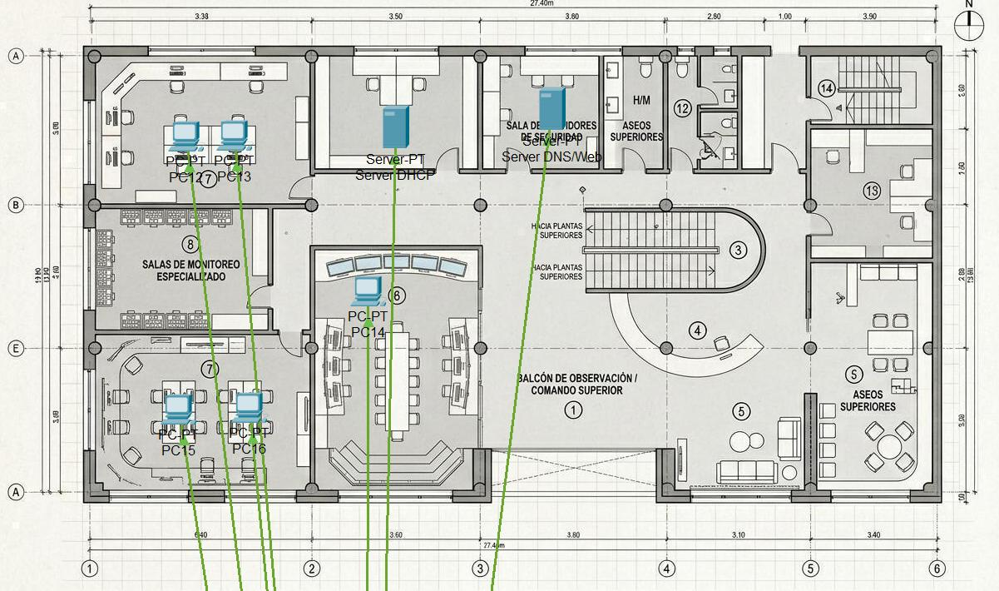
3. Justificación de hardware 3. Hardware justification
3.1. Elección de routers
Para la interconexión de los tres edificios se han utilizado routers modelo Cisco ISR4331. Este modelo ha sido elegido por las siguientes razones:
- Dispone de múltiples interfaces GigabitEthernet para la conexión con la red local de cada edificio.
- Permite la instalación de módulos serie para la interconexión WAN entre edificios.
- Soporta todas las funcionalidades necesarias para el proyecto: enrutamiento estático, DHCP con IP Helper y listas de acceso.
- Es un modelo ampliamente utilizado en entornos empresariales y educativos.
3.2. Elección de switches
Para la interconexión de los equipos dentro de cada edificio se han utilizado switches modelo Cisco 2960-24TT. Este modelo ha sido elegido por las siguientes razones:
- Dispone de 24 puertos FastEthernet para la conexión de los equipos finales.
- Cuenta con 2 puertos GigabitEthernet para la conexión con el router del edificio.
- Es un modelo sencillo y suficiente para las necesidades de cada edificio.
3.3. Centro de Control: justificación de equipos
El Centro de Control dispone de equipos de trabajo en su planta baja junto al rack principal. Esta decisión se ha tomado por los siguientes motivos:
- La planta baja del Centro de Control alberga los servidores DHCP y DNS/Web, que requieren supervisión y administración local.
- Disponer de equipos de trabajo en esta planta permite a los administradores de red monitorizar y gestionar la infraestructura de forma directa.
- Es una práctica habitual en entornos reales contar con puestos de administración local en la misma planta que los equipos de comunicaciones.
Hardware justification: ISR4331 routers were chosen for the interconnection between buildings for their multiple GigabitEthernet interfaces, support for serial WAN modules, and full support for static routing, DHCP with IP Helper, and access lists. 2960-24TT switches were chosen for connecting end devices within each building, with 24 FastEthernet ports plus 2 GigabitEthernet uplinks. The Centro de Control keeps admin workstations on its ground floor, next to the DHCP and DNS/Web servers, since it's standard practice to have local admin stations on the same floor as the communications equipment.
4. Direccionamiento IP — VLSM 4. IP addressing — VLSM
4.1. Tabla de subredes
Para el direccionamiento de la red se ha utilizado la técnica VLSM partiendo de la red base
192.168.0.0/24. Esta técnica permite dividir una red en subredes de diferente
tamaño adaptadas a las necesidades reales de cada edificio, optimizando así el uso del
espacio de direccionamiento. Las subredes se han calculado ordenando de mayor a menor número
de hosts necesarios:
| Subred | Red | Máscara | Hosts útiles | Rango usable | Broadcast |
|---|---|---|---|---|---|
| Facultad 1 | 192.168.0.0/28 | 255.255.255.240 | 14 | 192.168.0.1 – 192.168.0.14 | 192.168.0.15 |
| Centro de Control | 192.168.0.16/28 | 255.255.255.240 | 14 | 192.168.0.17 – 192.168.0.30 | 192.168.0.31 |
| Facultad 2 | 192.168.0.32/28 | 255.255.255.240 | 14 | 192.168.0.33 – 192.168.0.46 | 192.168.0.47 |
| Enlace R0-R1 | 192.168.0.48/30 | 255.255.255.252 | 2 | 192.168.0.49 – 192.168.0.50 | 192.168.0.51 |
| Enlace R1-R2 | 192.168.0.52/30 | 255.255.255.252 | 2 | 192.168.0.53 – 192.168.0.54 | 192.168.0.55 |
4.2. Tabla de asignación de IPs
| Dispositivo | IP | Máscara | Gateway |
|---|---|---|---|
| Router0 (LAN) | 192.168.0.1 | 255.255.255.240 | — |
| Router0 (R0-R1) | 192.168.0.49 | 255.255.255.252 | — |
| PC1 | 192.168.0.2 | 255.255.255.240 | 192.168.0.1 |
| PC2 | 192.168.0.3 | 255.255.255.240 | 192.168.0.1 |
| PC3 | 192.168.0.4 | 255.255.255.240 | 192.168.0.1 |
| PC4 | 192.168.0.5 | 255.255.255.240 | 192.168.0.1 |
| PC5 | 192.168.0.6 | 255.255.255.240 | 192.168.0.1 |
| PC6 | 192.168.0.7 | 255.255.255.240 | 192.168.0.1 |
| PC7 | 192.168.0.8 | 255.255.255.240 | 192.168.0.1 |
| PC8 | 192.168.0.9 | 255.255.255.240 | 192.168.0.1 |
| PC9 | 192.168.0.10 | 255.255.255.240 | 192.168.0.1 |
| PC10 | 192.168.0.11 | 255.255.255.240 | 192.168.0.1 |
| Router1 (LAN) | 192.168.0.17 | 255.255.255.240 | — |
| Router1 (R0-R1) | 192.168.0.50 | 255.255.255.252 | — |
| Router1 (R1-R2) | 192.168.0.53 | 255.255.255.252 | — |
| PC0 | 192.168.0.18 | 255.255.255.240 | 192.168.0.17 |
| PC17 | 192.168.0.19 | 255.255.255.240 | 192.168.0.17 |
| PC18 | 192.168.0.20 | 255.255.255.240 | 192.168.0.17 |
| PC12 | 192.168.0.21 | 255.255.255.240 | 192.168.0.17 |
| PC13 | 192.168.0.22 | 255.255.255.240 | 192.168.0.17 |
| PC14 | 192.168.0.23 | 255.255.255.240 | 192.168.0.17 |
| PC15 | 192.168.0.24 | 255.255.255.240 | 192.168.0.17 |
| PC16 | 192.168.0.25 | 255.255.255.240 | 192.168.0.17 |
| Servidor DHCP | 192.168.0.26 | 255.255.255.240 | 192.168.0.17 |
| Servidor DNS/Web | 192.168.0.27 | 255.255.255.240 | 192.168.0.17 |
| Router2 (LAN) | 192.168.0.33 | 255.255.255.240 | — |
| Router2 (R1-R2) | 192.168.0.54 | 255.255.255.252 | — |
| PC19 | 192.168.0.34 | 255.255.255.240 | 192.168.0.33 |
| PC20 | 192.168.0.35 | 255.255.255.240 | 192.168.0.33 |
| PC21 | 192.168.0.36 | 255.255.255.240 | 192.168.0.33 |
| PC22 | 192.168.0.37 | 255.255.255.240 | 192.168.0.33 |
| PC23 | 192.168.0.38 | 255.255.255.240 | 192.168.0.33 |
| PC24 | 192.168.0.39 | 255.255.255.240 | 192.168.0.33 |
| PC25 | 192.168.0.40 | 255.255.255.240 | 192.168.0.33 |
IP addressing was done with VLSM starting from the base network 192.168.0.0/24,
sized from largest to smallest subnet: 14 usable hosts each for Facultad 1, Centro de Control,
and Facultad 2, plus two /30 point-to-point links between routers. The full device-by-device
IP assignment table is above, in Spanish only since it's addressing data rather than prose.
5. Configuración lógica 5. Logical configuration
5.1. Tablas de enrutamiento estático
Para garantizar la comunicación entre todos los edificios se ha configurado enrutamiento estático en los tres routers:
Router0 (Facultad 1):
| Red destino | Máscara | Siguiente salto |
|---|---|---|
| 192.168.0.16/28 | 255.255.255.240 | 192.168.0.50 |
| 192.168.0.32/28 | 255.255.255.240 | 192.168.0.50 |
| 192.168.0.52/30 | 255.255.255.252 | 192.168.0.50 |
Router1 (Centro de Control):
| Red destino | Máscara | Siguiente salto |
|---|---|---|
| 192.168.0.0/28 | 255.255.255.240 | 192.168.0.49 |
| 192.168.0.32/28 | 255.255.255.240 | 192.168.0.54 |
Router2 (Facultad 2):
| Red destino | Máscara | Siguiente salto |
|---|---|---|
| 192.168.0.0/28 | 255.255.255.240 | 192.168.0.53 |
| 192.168.0.16/28 | 255.255.255.240 | 192.168.0.53 |
| 192.168.0.48/30 | 255.255.255.252 | 192.168.0.53 |
5.2. Configuración DHCP
Para la asignación automática de direcciones IP se ha configurado un servidor DHCP
centralizado en el Centro de Control con la dirección IP 192.168.0.26. Este
servidor gestiona tres pools de direcciones, uno por cada edificio.
Para que las peticiones DHCP de Facultad 1 y Facultad 2 lleguen al servidor centralizado, se
ha configurado el comando ip helper-address en Router0 y Router2 apuntando a
192.168.0.26.
Los equipos del Centro de Control tienen IP estática asignada debido a que se trata de equipos de administración y servidores, para los cuales es una buena práctica mantener una dirección fija y conocida en todo momento.
Static routing was configured on all three routers so every building can reach the other two.
A centralized DHCP server on the Centro de Control (192.168.0.26) manages three
address pools, one per building, using ip helper-address on Router0 and Router2
so DHCP requests from Facultad 1 and Facultad 2 reach the centralized server. Centro de
Control devices keep static IPs since they're admin and server equipment, where a fixed,
known address is good practice.
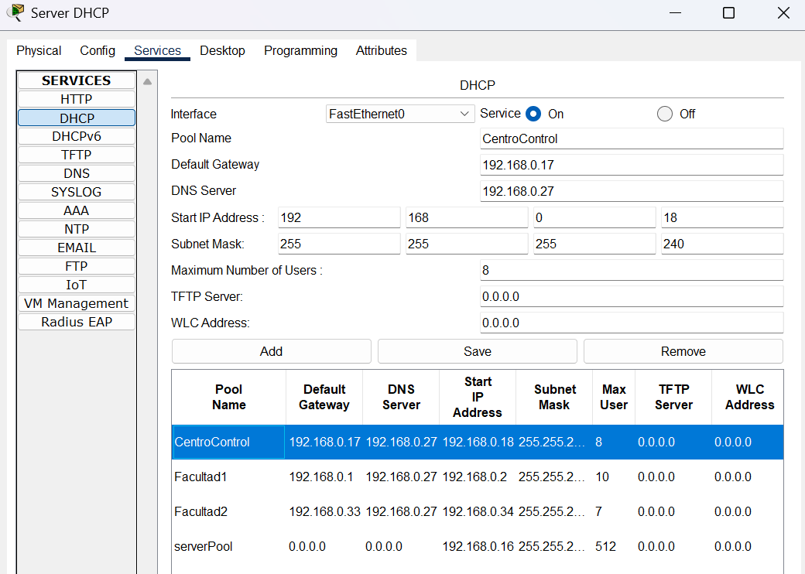
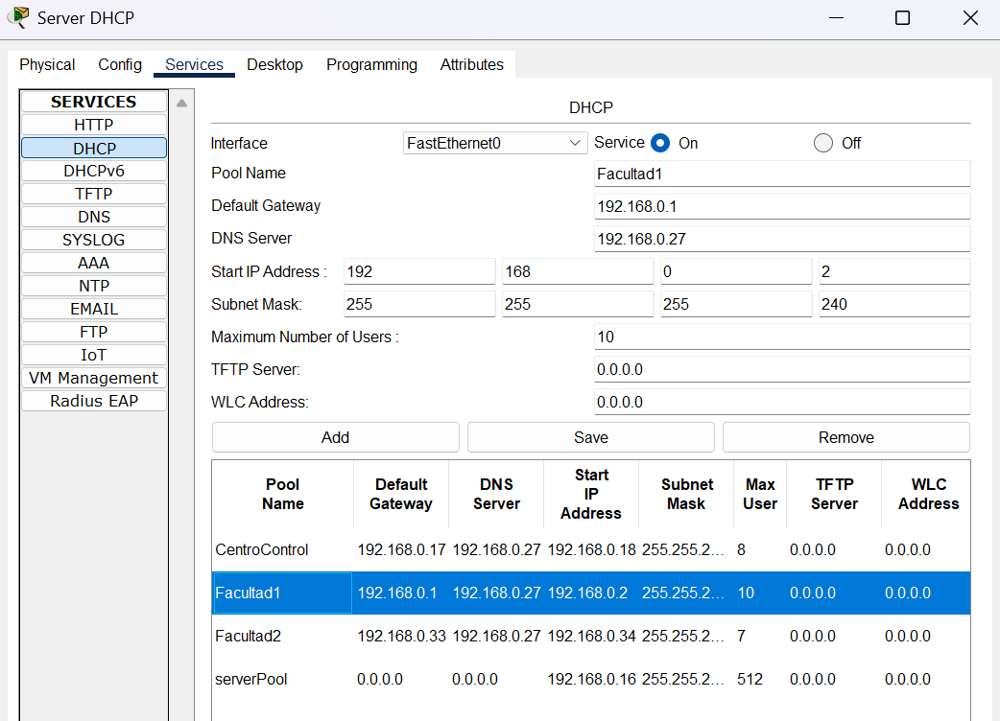
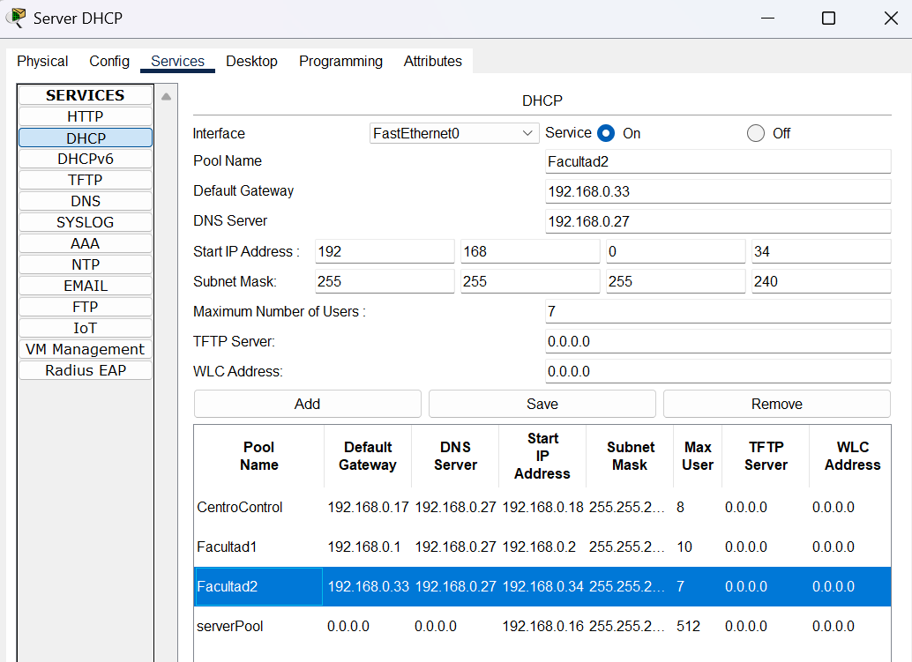
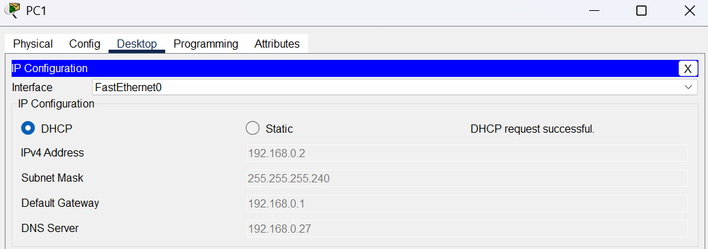
6. Verificación de conectividad 6. Connectivity verification
6.1. Capturas de show ip route
A continuación se muestran las tablas de enrutamiento de cada router obtenidas mediante el
comando show ip route, donde se puede verificar que todas las rutas están
correctamente configuradas.
Below are each router's routing tables obtained with show ip route, verifying
that all routes are correctly configured.
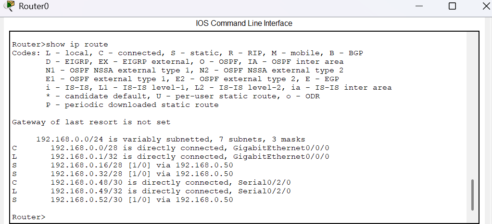
show ip route.
Router0 — show ip route.
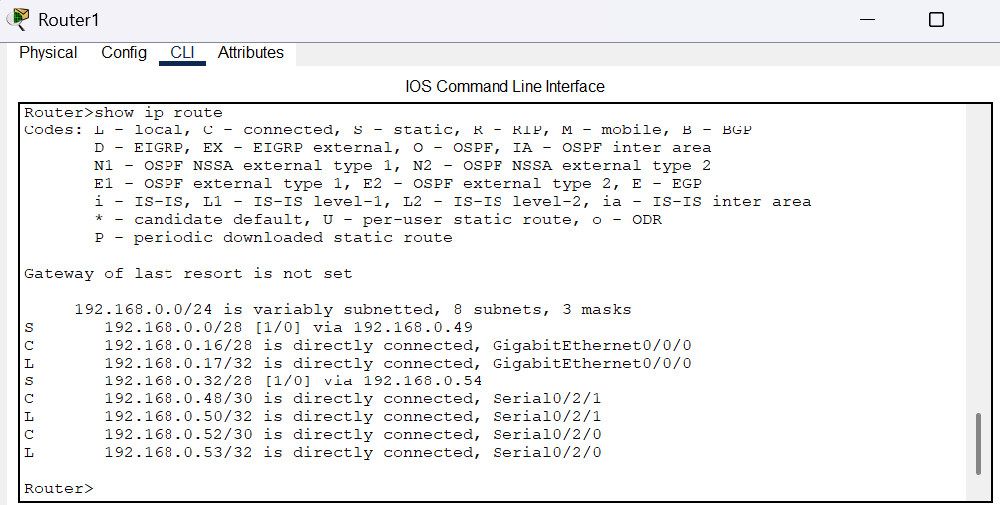
show ip route.
Router1 — show ip route.
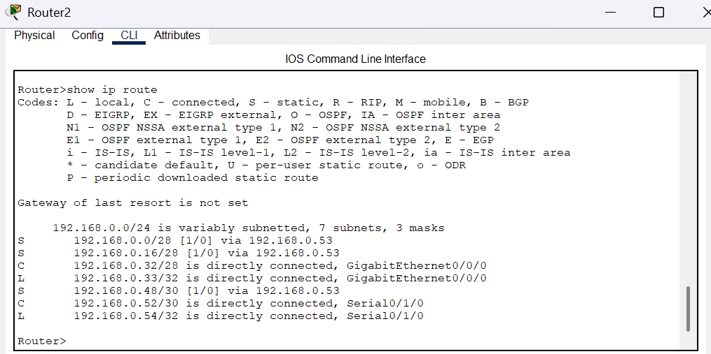
show ip route.
Router2 — show ip route.
6.2. Capturas de pings exitosos
Para verificar la conectividad entre los tres edificios se han realizado pings entre equipos de distintas subredes:
- Ping desde PC1 (Facultad 1) hasta PC13 (Centro de Control).
- Ping desde PC1 (Facultad 1) hasta PC19 (Facultad 2).
- Ping desde PC13 (Centro de Control) hasta PC19 (Facultad 2).
To verify connectivity between the three buildings, pings were run between devices on different subnets: PC1 (Facultad 1) to PC13 (Centro de Control), PC1 (Facultad 1) to PC19 (Facultad 2), and PC13 (Centro de Control) to PC19 (Facultad 2).
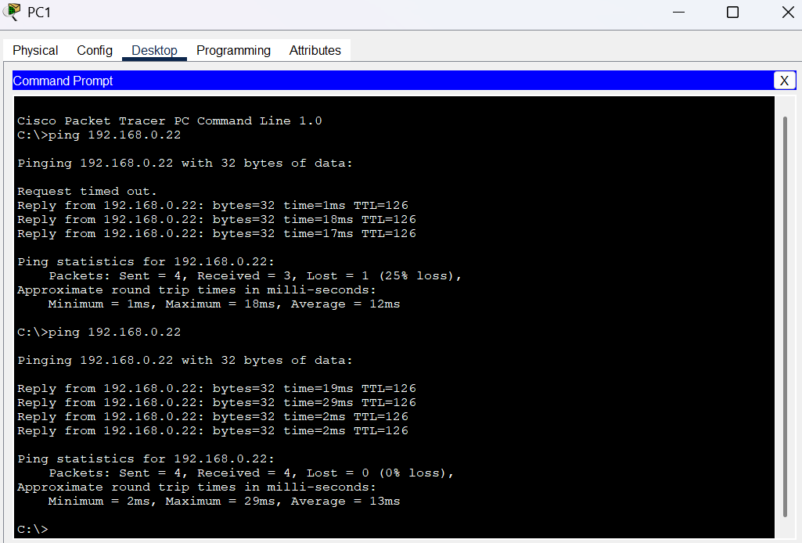
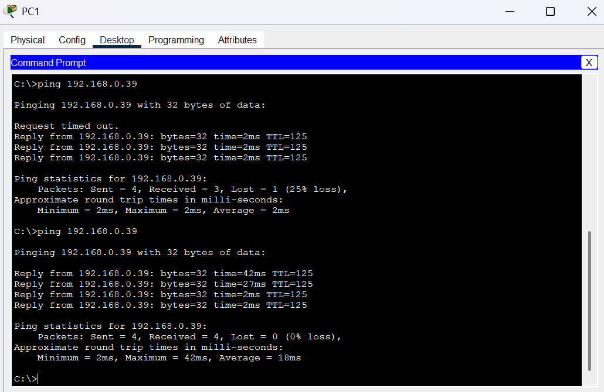
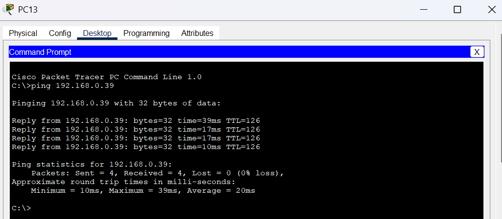
7. Servidor DNS y Web 7. DNS and Web server
Como punto extra del proyecto se ha implementado un servidor DNS y Web en el Centro de
Control con la dirección IP 192.168.0.27.
Servidor DNS:
El servidor DNS se ha configurado con el dominio www.informaticos.alajara.uni,
que resuelve a la dirección IP 192.168.0.27 del propio servidor. Esto permite que
cualquier equipo de la red universitaria pueda acceder a la página web mediante el nombre de
dominio en lugar de la dirección IP.
Para que los equipos de Facultad 1 y Facultad 2 puedan resolver el dominio, el servidor DHCP
reparte automáticamente la dirección del servidor DNS 192.168.0.27 a todos los
equipos de la red.
Servidor Web:
El servidor Web aloja una página HTML accesible desde cualquier punto de la red mediante el
navegador web de Packet Tracer introduciendo la URL
http://www.informaticos.alajara.uni.
As an extra part of the project, a DNS and Web server was implemented on the Centro de
Control at 192.168.0.27, resolving the domain
www.informaticos.alajara.uni. The DHCP server automatically hands out that DNS
address to every device on the network, and the Web server hosts an HTML page reachable from
anywhere on the network through that domain.
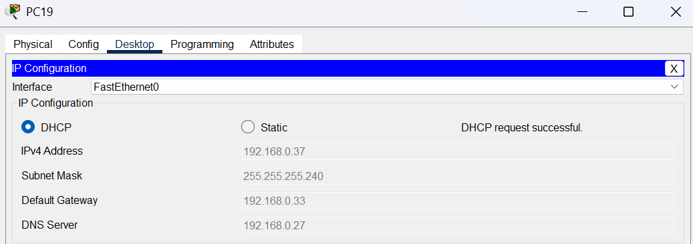
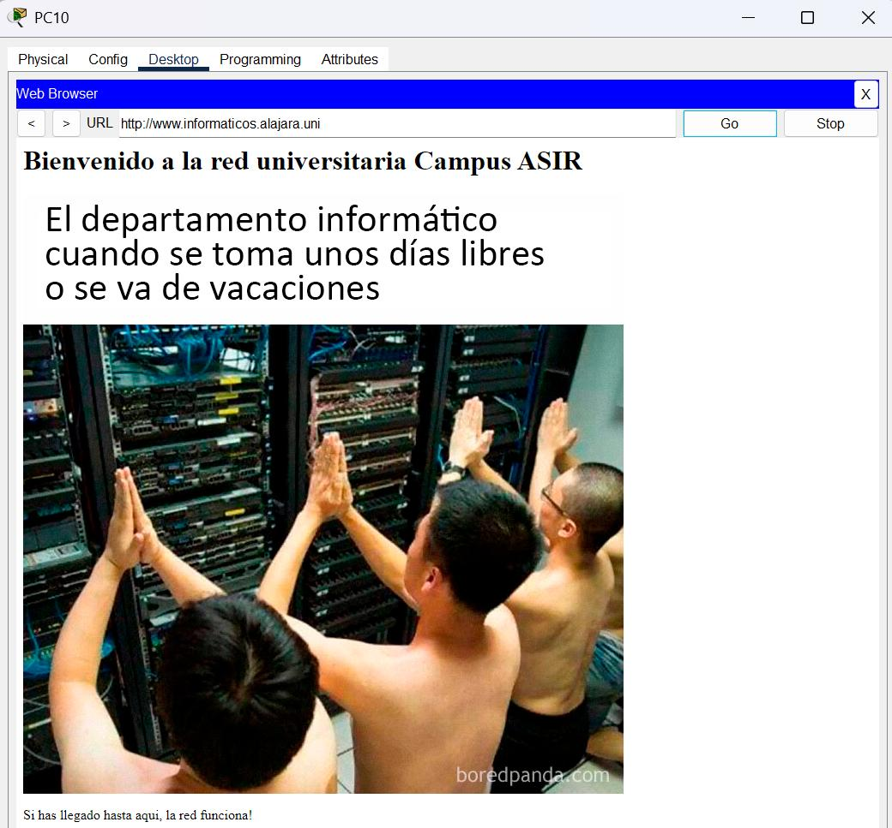
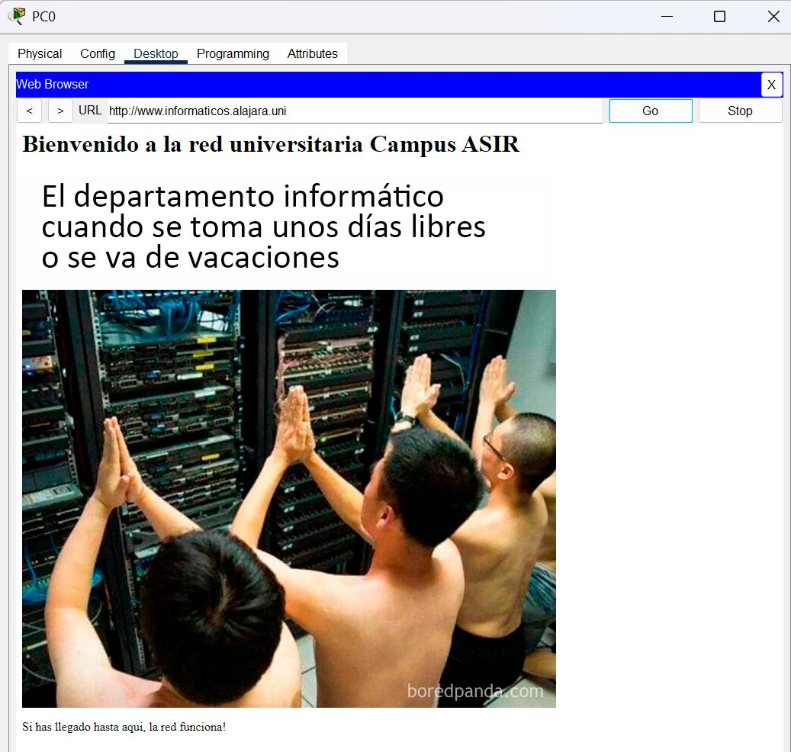
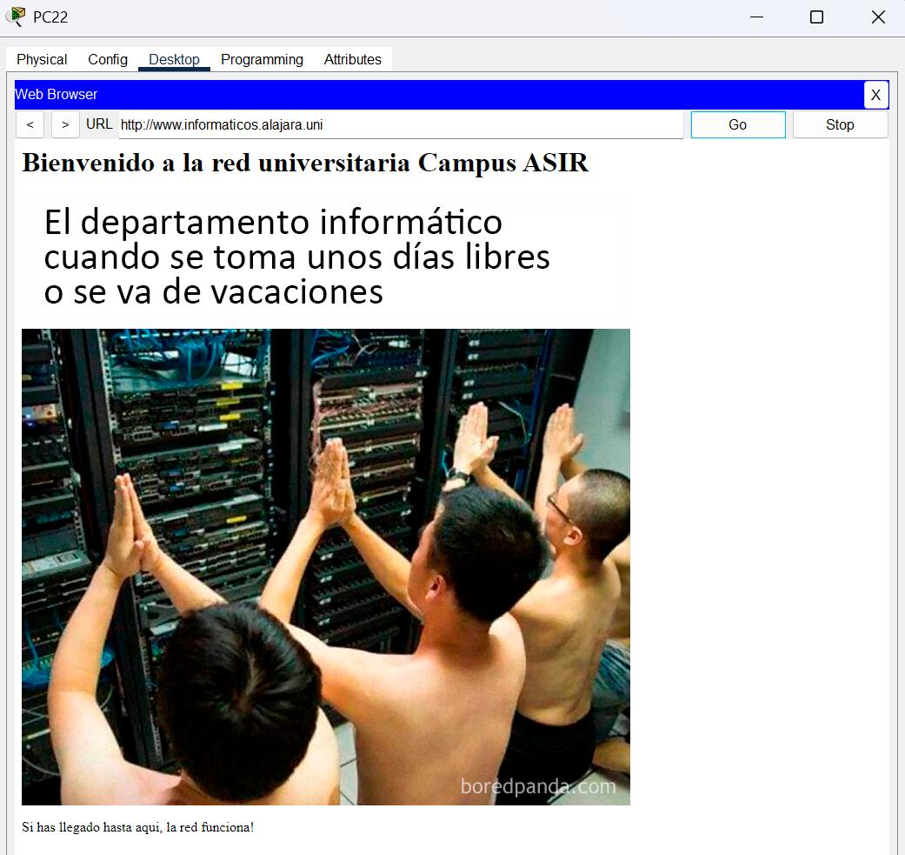
8. Conclusión 8. Conclusion
El presente proyecto ha permitido diseñar e implementar una red universitaria completa y funcional, abarcando desde el diseño físico de los edificios hasta la configuración lógica de los servicios de red.
Se ha conseguido una infraestructura de red que cumple con todos los requisitos establecidos en el enunciado:
- Tres edificios interconectados con su correspondiente infraestructura física y lógica.
- Direccionamiento eficiente mediante la técnica VLSM, optimizando el uso del espacio de direccionamiento disponible.
- Comunicación total entre todos los equipos de la red gracias al enrutamiento estático configurado en los tres routers.
- Asignación automática de direcciones IP mediante un servidor DHCP centralizado en el Centro de Control.
- Servidor DNS y Web funcional accesible desde cualquier punto de la red mediante el dominio www.informaticos.alajara.uni.
Durante el desarrollo del proyecto se han aplicado conocimientos de direccionamiento IP, subnetting, enrutamiento estático y configuración de servicios de red, consolidando los conocimientos adquiridos a lo largo del módulo de Redes de Área Local.
This project made it possible to design and implement a complete, working university network, covering everything from the physical design of the buildings to the logical configuration of the network services. The resulting infrastructure meets every requirement from the assignment: three interconnected buildings with full physical and logical infrastructure, efficient VLSM addressing, full communication between all devices through static routing on the three routers, automatic IP assignment via a centralized DHCP server, and a working DNS and Web server reachable from anywhere on the network. Throughout the project I applied IP addressing, subnetting, static routing, and network service configuration knowledge, consolidating what I learned over the Local Area Networks module.
Lo que esto no cuenta: mi experiencia real en la empresa What this doesn't cover: my real experience at the company
Todo lo anterior es la memoria tal cual la entregué para el módulo, un entorno simulado en Packet Tracer. Pero quiero añadir algo que no está reflejado en este proyecto y que sí forma parte de mi experiencia real: las prácticas que hice en una empresa, en un entorno de trabajo de verdad, no en un simulador.
Una de las cosas que en este proyecto de clase no se ve por ningún lado es la segmentación por VLAN. Aquí toda la red va plana por edificio y planta, sin aislar tráfico dentro de cada LAN. En la empresa sí que trabajé con administración de VLAN de forma real, sobre infraestructura física, no sobre una simulación. Con los conocimientos que tengo ahora, esta misma red de Campus ASIR se podría haber diseñado también con VLANs por planta o por tipo de equipo (puestos de administración, servidores, equipos de aulas), y es algo que me planteo para una futura revisión del proyecto.
Además, durante esas prácticas participé en la creación desde cero de una red real de edificios de la empresa, incluyendo la implementación de VLAN internas para segmentar el tráfico entre departamentos y plantas. No fue un ejercicio de clase: fue documentar necesidades reales, cablear, configurar switches gestionables y verificar que cada VLAN veía exactamente lo que tenía que ver y nada más.
Por otro lado, también administré bases de datos alojadas en sistemas virtualizados y en distintos servidores de la empresa, lo que incluyó su administración dentro de la propia red corporativa: permisos de acceso, ubicación de los servidores en la topología interna, y cómo se comunicaban esos servicios con el resto de la infraestructura.
Lo dejo aquí como anécdota, pero también como algo que me parece relevante: un proyecto académico como este sienta las bases (VLSM, enrutamiento, DHCP, DNS), pero es en un entorno de trabajo real donde esas bases se ponen a prueba con matices que en clase no siempre se ven, como las VLAN o la gestión de bases de datos en producción.
Everything above is the report exactly as I submitted it, a simulated environment in Packet Tracer. But I want to add something that isn't reflected in this project and that is part of my real experience: the internship I did at a company, in an actual work environment, not a simulator.
One thing that's nowhere to be seen in this class project is VLAN segmentation — here the whole network is flat per building and floor, with no traffic isolation within each LAN. At the company I did work with real VLAN administration, on physical infrastructure, not a simulation. With what I know now, this same Campus ASIR network could also have been designed with VLANs per floor or per device type (admin stations, servers, classroom equipment), and it's something I'm considering for a future revision of the project.
During that internship I also took part in building a real company network from scratch, including implementing internal VLANs to segment traffic between departments and floors. It wasn't a classroom exercise: it meant documenting real needs, cabling, configuring managed switches, and verifying that each VLAN could see exactly what it was supposed to see and nothing more.
I also administered databases hosted on virtualized systems and on different company servers, which included managing them within the corporate network itself: access permissions, where the servers sat in the internal topology, and how those services communicated with the rest of the infrastructure.
I'm leaving this here as an anecdote, but also as something I think is relevant: an academic project like this one lays the groundwork (VLSM, routing, DHCP, DNS), but it's in a real work environment where that groundwork gets tested against details that don't always show up in class, like VLANs or managing databases in production.